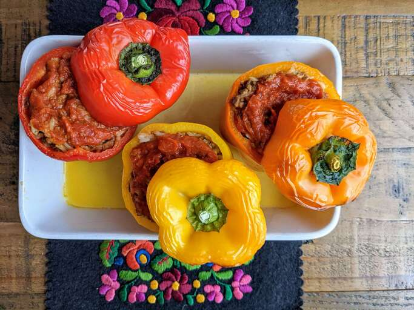

Stuffed peppers

Stuffed peppers is a dish common in many cuisines. It consists of hollowed or halved peppers filled with any of a variety of fillings, often including meat, vegetables, cheese, rice, or sauce. The dish is usually assembled by filling the cavities of the peppers and then cooking.
Ingredients
- 1 cup cold water
- Half-cup uncooked long grain white rice
- 1 tbsp vegetable oil
- 1 pound ground beef
- 6 medium green bell peppers
- 16 ounces tomate sauce
- 1 tbsp Worcestershite sauce
- Quarter tsp onion powder
- Quarter tsp garlic powder
- Salt & ground black pepper
- 1 tsp Italian seasoning
Steps
- Preheat the oven to 350 degrees F.
- Bring water and rice to boil, simmer until the rice is tender.
- Heat oil in a skillet and add beef, cook 7 to 9 minutes.
- Hollow out bell peppers and make sure they stand up straight.
- Prepare filling by mixing cooked beef, cooked rice, half of tomato sauce, Worcestershite sauce, garlic powder, onion powder, salt and pepper.
- Spoon an equal amount of filling into each hollowed pepper.
- Mix remaining tomato sauce and Italian seasoning in a bowl, and pour over the stuffed peppers.
- Bake in preheated oven, basting with sauce every 15 minutes until peppers are tender.